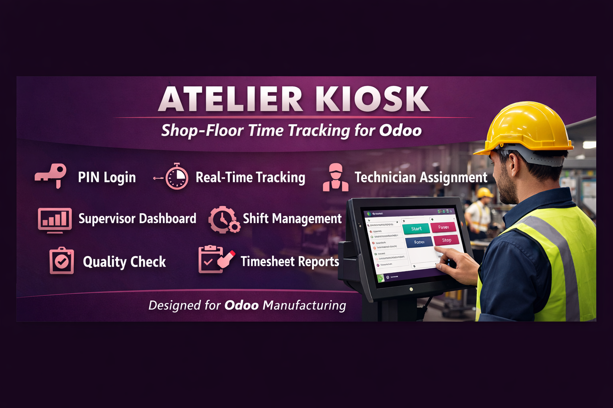

The smart shop-floor kiosk & supervisor dashboard for Odoo Manufacturing
Atelier turns any tablet or wall-mounted screen into a powerful shop-floor kiosk. Technicians log in with a personal PIN, see only their launched Manufacturing Orders, and track time with a single tap — no Odoo licence needed on the factory floor.


Each technician authenticates with a personal numeric PIN directly on the touchscreen. No Odoo session required.
Start, Pause and Stop timers per work-order operation. Blocks are stored in mrp.workcenter.productivity — fully compatible with native Odoo reporting.
Mark any confirmed MO as “Lancé” with one click. Only launched MOs appear in the kiosk, keeping the floor uncluttered.
Assign specific technicians to each MO. Each worker sees only their own jobs — no confusion, no accidental time entries.
Dedicated web dashboard at /atelier/supervisor — live active sessions, launched MOs, daily technician summary, shifts and performance statistics.
Define morning, afternoon and night shifts. Open timers are automatically closed when a shift ends — zero forgotten clock-outs.
Tag MOs as Normal, Urgent or Critical. A burndown percentage shows how much planned time has already been consumed across all operations.
An “Autocontrôle” quality check (pass/fail) is automatically created for every work-order when an MO is launched — seamlessly integrating with Odoo Quality.
Print a clean daily pointage (timesheet) per technician directly from the backend — ideal for payroll or audit purposes.
| Step | Actor | Action |
|---|---|---|
| 1 | Production Manager | Confirms the MO in Odoo and clicks Launch to Kiosk |
| 2 | Production Manager | Assigns technicians to the MO (optional — all workers can see it if unassigned) |
| 3 | Technician | Opens the kiosk URL on the shop-floor screen, selects their name and enters their PIN |
| 4 | Technician | Sees their active MOs, taps Start on the desired operation |
| 5 | Technician | Taps Pause (break) or Stop (finished) — timer blocks are saved instantly |
| 6 | Supervisor | Monitors everything in real time from the Supervisor Dashboard |
| 7 | Shift cron | At shift end, all open timers are automatically closed |
mrp, hr, web, quality_control, quality_mrp_workordermrp.workcenter.productivity — fully visible in standard Odoo OEE and productivity reports./atelier (kiosk) and /atelier/supervisor (dashboard) — bookmarkable and full-screen friendly.